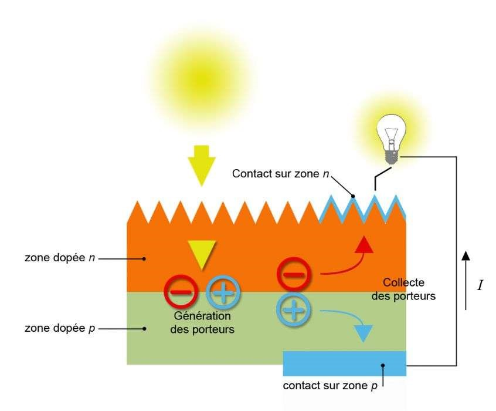

République Algérienne Démocratique et Populaire
Ministère de l’Enseignement Supérieur et de la Recherche
Scientifique
Université A.MIRA-BEJAIA
Faculté de Technologie
Département d’Electrotechnique
Projet de Fin d’Etude
Pour l’obtention du diplôme de Master en Electromécanique
Thème
Réalisation d’une interface web pour le dimensionnement des installations photovoltaïques autonomes
Préparé par :
BENMEZIANE Yanis
BOURENANE Zakaria
Dirigé par :
Mr R.BABOURI
Année Universitaire : 2019/2020
De nos jours les gens de plus en plus veulent convertir leur source d’alimentation électrique vers le photovoltaïque pour de différentes raisons (économique, indépendance énergétique, lieu isolé…etc.) mais plusieurs obstacles techniques les empêchent parmi eux le dimensionnement vu sa complexité et son cout élevé. Pour résoudre ce problème nous avons réuni nos connaissances acquises dans le domaine du photovoltaïque ainsi que nos compétences en informatique et nous avons réussi à créer une interface web qui permet d’effectuer le processus du dimensionnement d’une manière simple et économique.
Lorsque la cellule est exposée au rayonnement solaire, les photons d'énergie (Eph = h.v) pénétrant dans la cellule solaire transmettent leur énergie aux atomes de la jonction. Si cette énergie est suffisamment élevée, elle peut faire passer les électrons de la bande de valence à la bande de conduction du matériau semi-conducteur et créer ainsi des paires « électron- trou ». Les électrons (charges N) et les trous (charges P), sont alors maintenus séparés par un champ électrique qui constitue une barrière de potentiel. Si une charge est placée aux bornes de la cellule, les électrons de la zone N rejoignent les trous de la zone P via la connexion extérieure, donnant naissance à une différence de potentiel et un courant électrique circule.
Le principe de fonctionnement d’une cellule solaire.
Le principe de fonctionnement d’une cellule solaire.
Il s’agit de systèmes qui regroupent des sources d’énergie de nature différentes telle une installation éolienne, un générateur diesel ou une centrale de cogénération en plus du générateur photovoltaïque. Ce type d’installation est utilisé lorsque le générateur photovoltaïque seul ne couvre pas toute l’énergie requise .
L’efficacité de toute installation électrique dépend
fondamentalement de la rigueur de son dimensionnement et de son
utilisation car il influe directement sur le coût et les
performances d’une installation.
Le dimensionnement a pour but de déterminer la puissance du
générateur photovoltaïque et la capacité de la batterie, à partir
des données d’ensoleillement du site d’une part et des besoins
électriques de l’utilisateur d’autre part.
Dans cette méthode, on estime l’énergie récupérable pour une période critique d’un mois, appelé le mois le plus défavorable. Ce mois correspond au mois pendant lequel la valeur de l’irradiation moyenne mensuelle est la plus faible de l’année ou dans certains pays la période d’hivers est rude.
Avec :
\[\begin{aligned} E_J=n_J .P_J .t_J \end{aligned} \]Les données de l’ensoleillement peuvent être relevées sur le site ou enregistrées sur la carte de l’ensoleillement de la région ou encore obtenues au niveau de la station météo la plus proche de la zone
L'Hypertext Markup Language, plus communément désigné sous son acronyme HTML, est employé pour faire référence à un langage informatique qui permet de mettre sur internet des données rédigées.Il est souvent utilisé conjointement avec le langage de programmation JavaScript et des feuilles de style en cascade (CSS).
Les feuilles de styles (en anglais "Cascading Style Sheets", abrégé CSS) sont un langage qui permet de gérer la présentation d'une page Web.Les styles permettent de définir des règles appliquées à un ou plusieurs documents HTML. Ces règles portent sur le positionnement des éléments, l'alignement, les polices de caractères, les couleurs, les marges et espacements, les bordures, les images de fond, etc.
JavaScript désigne un langage de développement informatique, et plus précisément un langage de script orienté objet. On le retrouve principalement dans les pages Internet. Il permet, entre autres, d'introduire sur une page web ou HTML des petites animations ou des effets. Nous avons utilisé ce langage pour accomplir les calculs et assurer la communication avec les API
Côté développeur, l'API définit la manière de rédiger un programme qui sollicite des services auprès d'un système d'exploitation ou d'une autre application. Les API sont mises en oeuvre au moyen d'appels de fonction, constitués de verbes et de noms. La syntaxe requise est décrite dans la documentation de l'application appelée. Nous citons comme exemple les API que nous avons utilisées dans notre travail.
C’est une Geocoding API ou en français l’API de géocodage et c’est un service qui fournit possibilite de convertir des adresses (comme une adresse de rue) en coordonnées géographiques (comme la latitude et la longitude), que on peut utiliser par exemple pour placer des marqueurs sur une carte.
C’est un une API qui fournit des prévisions météorologiques, des observations et des historiques de données météorologiques comme : température, précipitations, estimation des chutes de neige, indice UV, rayonnement solaire, conditions météorologiques et vitesse du vent. Tout cela pour des emplacements dans le monde entier. Ces données proviennent de plus de 120 000 stations météorologiques dans le monde et aussi des plus grands instituts mondiaux spécialisés dans ce secteur d’activité comme : NOAA Integrated Surface, MADIS et GHCN datasets. De plus, ils remplissent et collectent des données à partir d'ensembles de données alternatifs pour améliorer leurs ensembles de données historiques. Ces ensembles de données comprennent des historiques de satellites, des radars pluviométriques et des projets de réanalyse pour créer l'enregistrement des historiques de données météorologiques le plus complet possible. Pour notre travail on a besoin des données de l’ensoleillement ou le rayonnement solaire afin qu’on puisse avoir le gisement solaire partout dans le monde.
Reponse d'une API (LocationIQ)
D’une manière générale ce travail montre que grâce à nos connaissances dans le domaine photovoltaïque et l’outil informatique nous avons pu faciliter le dimensionnement d’un système photovoltaïque et le rendre accessible pour tout le monde, mais nous ne comptons pas s’arrêter à ce point-là, nous avons intérêt à rendre notre interface plus indépendante en calculant le nombre de jours d’autonomie pour chaque lieu introduit grâce au pourcentage de l’opacité des nuages le long des années précédentes et aussi proposer un schéma de montage détaillé à la fin du dimensionnement.